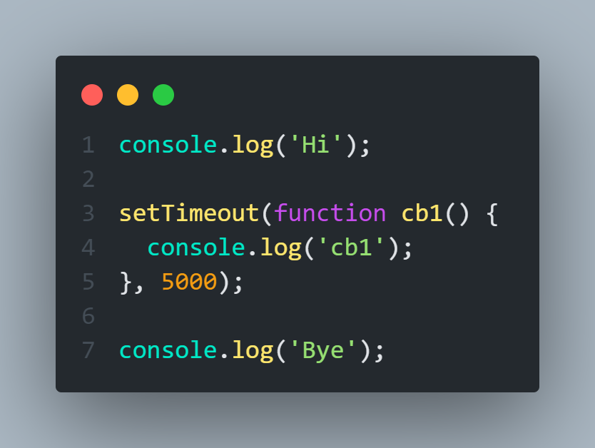
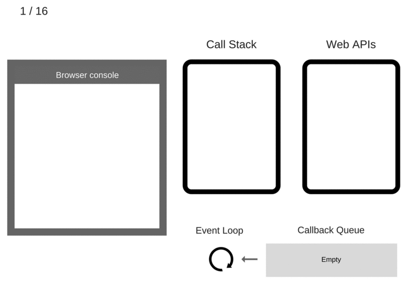
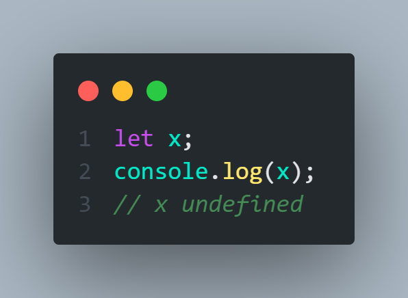
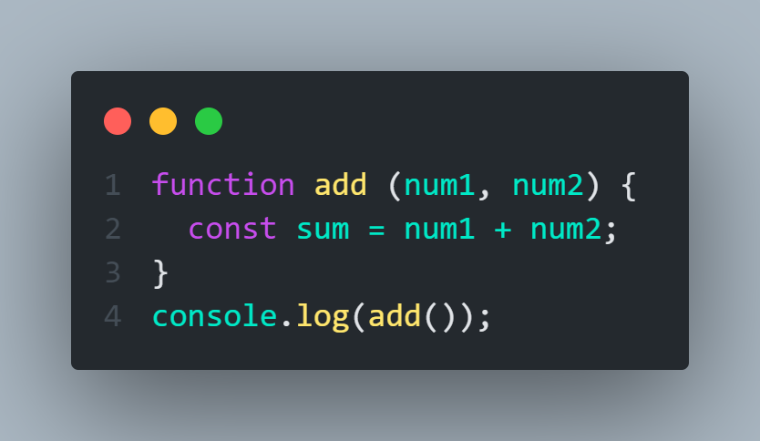
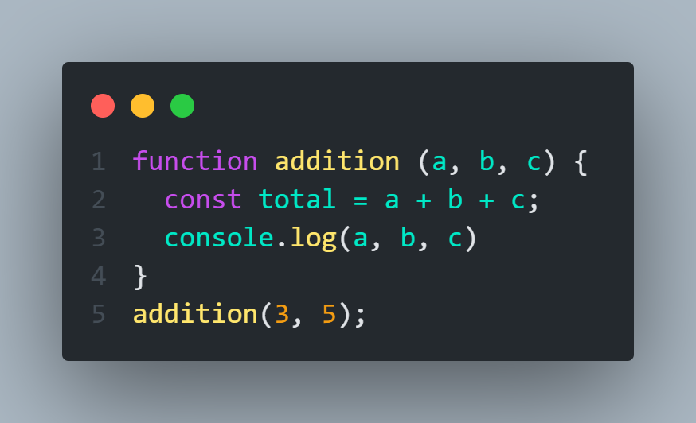
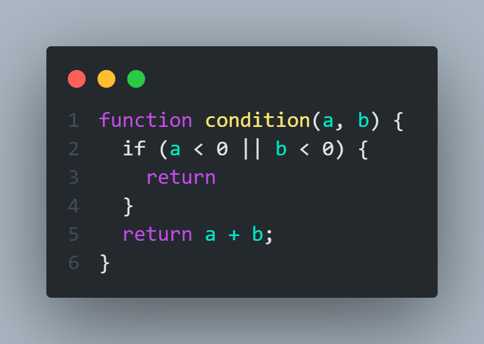
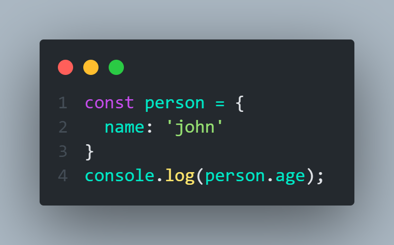
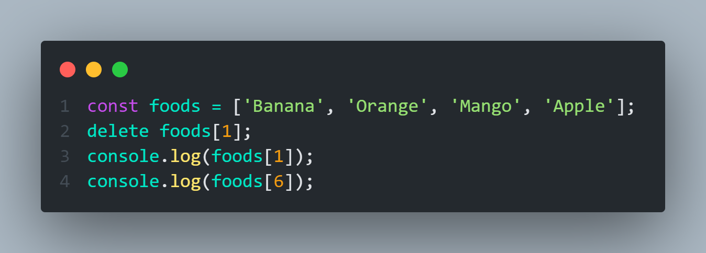
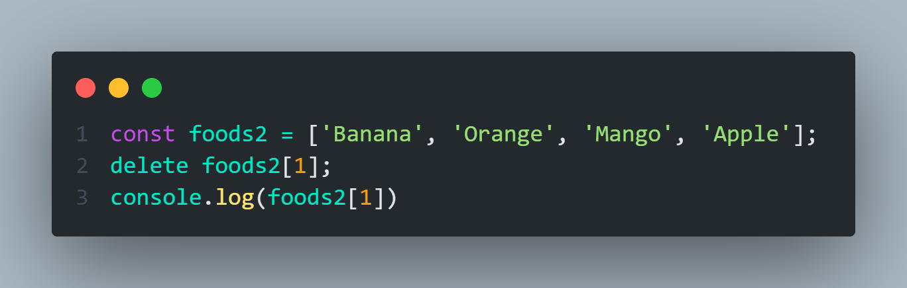
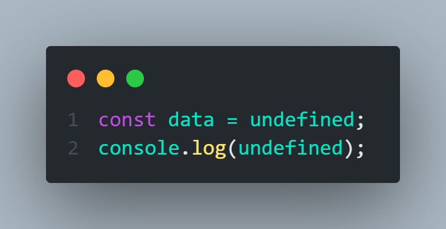

Difference between LocalStorage Vs SessionStorage
sessionStorage is similar to localStorage ; the difference is that while data in localStorage doesn't expire, data in sessionStorage is cleared when the page session ends. Whenever a document is loaded in a particular tab in the browser, a unique page session gets created and assigned to that particular tab
Global Scope Vs Block Scope
- 1. A variable declared at the top of a program or outside of a function is considered a global scope variable
- 2. Global Scope. Variables declared Globally (outside any function) have Global Scope. Global variables can be accessed from anywhere in a JavaScript program.
Global Scope
- Block scoped variables: A block scoped variable means that the variable defined within a block will not be accessible from outside the block. A block can reside inside a function, and a block scoped variable will not be available outside the block even if the block is inside a function.
Local Scope
How to work Event-loop in Javascript
The Event Loop has one simple job — to monitor the Call Stack and the Callback Queue. If the Call Stack is empty, the Event Loop will take the first event from the queue and will push it to the Call Stack, which effectively runs it.
Such an iteration is called a tick in the Event Loop. Each event is just a function callback.

This code execute like this

How many we get Undefined
8 ways we get Undefined
- 1) variable that is not initialized give undefined 
- 2) function with no return 
- 3) parameter that is not passed will be undefined 
- 4) if return has nothing on the right side will return undefined 
- 5) property that does not exists on an object will give undefined 
- 6) assessing an element outside the index range 
- 7) delete an element inside an array 
- 8) set a value directly to undefined 